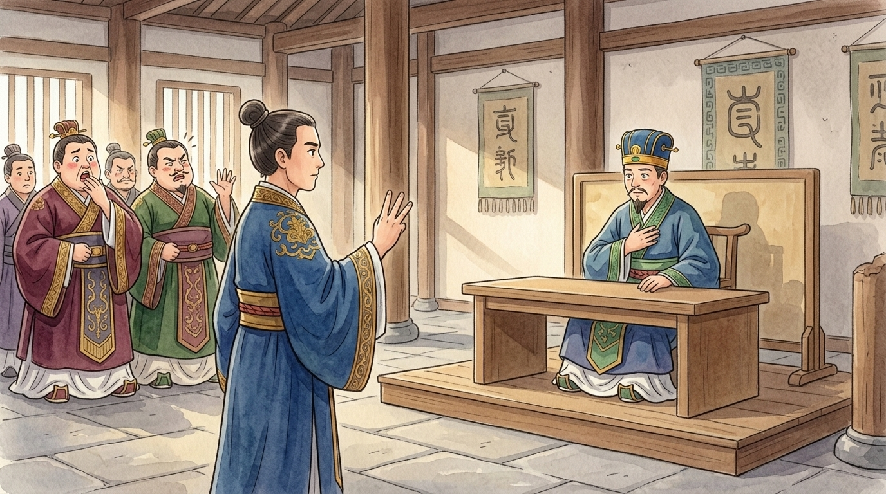
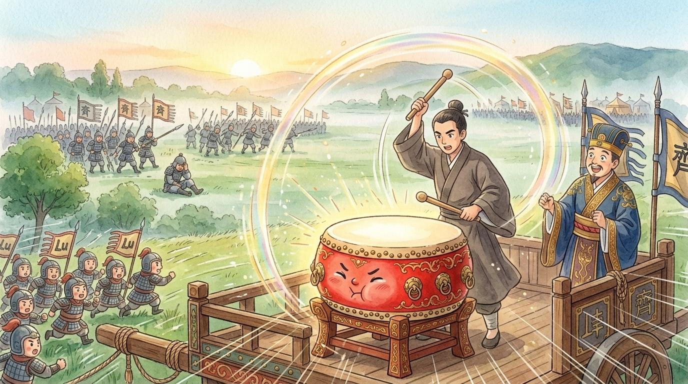
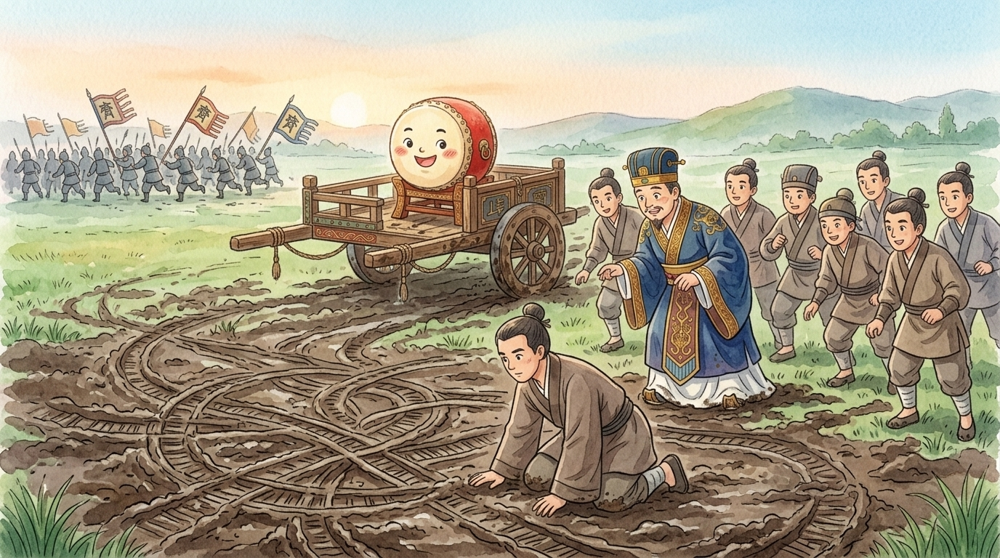

BOOM. Feel that in your chest, little reader? That's me. I am the great war drum (鼓) of the state of Lu (魯), stretched with oxhide, painted battle-red, older than your great-great-everything. Armies live and die by my voice: when I sound, soldiers charge; when I am silent, they hold. In my long loud life I have been beaten ten thousand times — but I am famous for a day when I was beaten exactly ONCE. Sit close. This is the story of the third drumbeat… and it isn't even mine.1
🥁 A nobody walks into the palace
The spring I remember, the mighty state of Qi (齊) marched on our little Lu. Everyone was afraid. Qi had more chariots, more soldiers, more everything. And then a plain man in plain clothes — a commoner (平民) named Cao Gui (曹劌) — announced he was going to the palace to advise the Duke. His neighbours laughed at him: "The men who eat meat will plan the war.2 What business is it of yours?" And Cao Gui gave the answer I have loved for 2,700 years: "The men who eat meat are short-sighted. Somebody had better go."
The Duke received him — desperate rulers have open doors — and Cao Gui asked one question, three times, like three taps testing a drumskin: "Sire, WHY should your people fight for you?"
The Duke tried: "I share my food and robes with my courtiers!" Cao Gui shook his head: "Small favours for a few. The people won't fight for that." The Duke tried again: "My offerings at the temples are honest and exact!" Another shake: "Small honesty for the gods. They won't fight for that either." Then the Duke thought, and said slowly: "In every lawsuit, great or small — a farmer's fence, a widow's ox — I may not always be clever, but I always try to judge fairly." And Cao Gui bowed low: "THAT is worth a war, sire. Fair judgment wins the people's hearts (民心) — and hearts are what armies are made of. Now — permit me to ride in your chariot."3

🥁 The battle where nothing happened (twice)
The armies met at a place called Changshao (長勺). I was rolled up onto the Duke's command chariot, drumsticks ready. Across the field, Qi's army spread out like a dark tide — and their drums began. DONG-DONG-DONG! Their first charge came roaring at us, banners screaming, ten thousand throats howling.
The Duke reached for my drumsticks. And Cao Gui put his hand over them. "Not yet."
No drumbeat came from me — so our lines simply… stood. Shields locked, quiet as a wall. And here is a secret about charges, little reader: a charge is made of COURAGE, and courage needs an answer. Qi's warriors ran at a silent wall, found nothing to crash against, slowed, wavered, and trudged back to their lines, confused. Their drums thundered a second time — DONG-DONG-DONG! — second charge, a little slower, a little quieter. Again Cao Gui held my sticks. Again the silent wall. Again the tide rolled back, grumbling now, tired now.
Why won't they FIGHT? We charged twice! My legs ache. My shout is used up. Honestly, if the drums go again, I shall jog at a respectful pace and wave my spear about a bit.
Then Qi's drums beat a THIRD time. And what shuffled forward was not a tide — it was a queue. Third-charge legs, third-charge lungs, third-charge hearts. And at that exact moment, Cao Gui seized my drumsticks, looked the Duke in the eye, and said: "NOW, sire."
He hit me once.
DOOOONG.
Ah, little reader, I have never made a sound like it, before or since. A whole battle's worth of saved-up courage burst out of our lines in one fresh, ferocious charge — first-charge legs against third-charge legs, full hearts against empty ones — and Qi's mighty army shattered like a dropped pot and RAN.4

🥁 The wheel tracks
The Duke, thrilled, ordered pursuit at once — and AGAIN Cao Gui stopped him. "Not yet, sire." While the whole army fidgeted, this careful man climbed DOWN from the chariot, peered at the enemy's wheel tracks in the mud, then climbed up on the rail and gazed after their banners. Only then: "Now chase (追) them."
Later, over the victory feast, the Duke finally asked: what WAS all that? And Cao Gui explained, in words schoolchildren still recite today: "Battle runs on courage. The first drumbeat FILLS an army's spirit (一鼓作氣); at the second, it fades (再而衰); by the third, it is empty (三而竭). Their empty met our full — so we won. As for the chase: a great state like Qi may fake a retreat to lure us into ambush (埋伏). But their wheel tracks ran wild and their banners had fallen — nobody organizes a trap THAT messily. Real panic. So: safe to chase."5

🥁 What the drum knows
People remember this battle for the trick with the drumbeats — waiting for the enemy's spirit (士氣) to empty before spending ours. And yes, that timing (時機) was perfect: victory often belongs not to the strongest, but to whoever still has courage LEFT when it matters. But an old drum hears deeper notes. Remember what Cao Gui checked FIRST, before any drum was touched: whether the people had a ruler worth fighting for. Fair judgment in small things — a farmer's fence, a widow's ox — THAT was Lu's real weapon. My one famous DONG only released what fairness had already stored up.
So, little reader, when your big moment comes — the exam, the race, the recital — remember the drum's secret: 一鼓作氣, "finish it on the first drumbeat." Don't start-stop-start until your courage drains to a third-beat shuffle. Gather yourself, wait for your true moment, then give it EVERYTHING in one whole-hearted go. And afterwards, be like Cao Gui: even when you're winning, check the wheel tracks. BOOM. 🥁